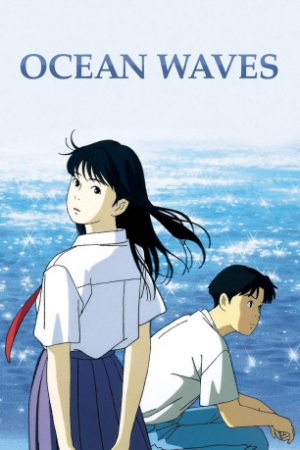

Also known as:海がきこえる (original title)
Country:Japan, 72 minutes
Spoken languages:Japanese
Genres:Animation, Drama, Romance
Director(s):Tomomi Mochizuki
Writer(s):Keiko Niwa, Saeko Himuro
Video Codec:Unknown
Number: 2755


Certification:PG
Storyline:
At Kichijōji Station, Tokyo, Taku Morisaki glimpses a familiar woman on the platform opposite boarding a train. Later, her photo falls from a shelf as he exits his apartment before flying to Kōchi Prefecture. Picking it up, he looks at it briefly before leaving. As the aeroplane takes off, he narrates the events that brought her into his life...
Cast:

Medium: Original DVD,
Comments: Part of Studio Ghibli Special Edition Collection
Loaned: No
Aspect ratio: Unknown